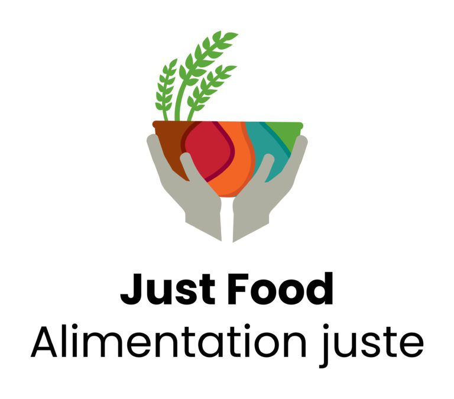

NAGA is a proud member of the
Just Food program. Just Food is a local, non-profit, community-based organization that works on both rural and urban food and farming issues in Ottawa and the surrounding region.
The
Debra Dynes Family House has been helping families and individuals in Ottawa since 1995. NAGA gardeners have been contributing to their emergency food bank for several years.
We have a plot completely dedicated to growing food for the food bank, and we have a collection box every weekend for members to donate produce.